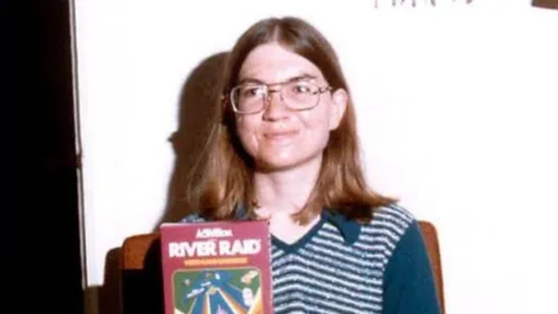

Origem
Nascida em 1955, se formou em Engenharia elétrica e logo depois virou mestre em ciência da computação. Jogadora desde sua adolescência, adorava fliperamas como “Computer Space”.

Primeira mulher a desenvolver um jogo eletrônico
“O tamanho dos seus sonhos deve sempre exceder a sua capacidade de alcançá-los.
Se os seus sonhos não te assustam, eles não são grandes o suficiente.”
Ellen Johnson-Sirleaf, primeira mulher a ser eleita chefe de estado de um país africano
Nascida em 1955, se formou em Engenharia elétrica e logo depois virou mestre em ciência da computação. Jogadora desde sua adolescência, adorava fliperamas como “Computer Space”.
Depois de passar rapidamente pela Tandem Computers, foi contratada como engenheira de softwares pela Atari logo que se formou na universidade, foi lá que desenvolveu seus dois primeiros jogos, ambos para o Atari 2600.
Saindo da companhia que se tornou o símbolo da revolução dos videogames no mundo, Shaw foi trabalhar na Activision, que, na época, fabricava cartuchos para o Atari 2600. Lá, a desenvolvedora programou seu game de maior sucesso, River Raid, considerado um clássico e um dos jogos mais populares de sua época.
O game introduziu mecânicas nunca antes vista, como a movimentação do avião para os lados, para frente e para trás, além de introduzir a limitação do combustível, já que sem ele você também morria. Alem de possuir velocidades diferentes e colisão com diferentes objetos. E por isso é considerado o pai do Checkpoint, pois era necessário que a aeronave controlada pelo jogador abastecesse para continuar seu trajeto.
Foi eleito como o jogo mais desafiador pela revista InfoWorld. No ano seguinte, em 1984, foi considerado como "O jogo mais jogável e divertido do mundo" pela revista The Desert News, e ganhou o prêmio de "melhor game de ação do ano" e um certificado de mérito na categoria “1984 Best Computer Action Game” durante o 5º Arkie Awards.
Em 2017, recebeu o prêmio de Ícone da Industria, dado pela The Game Awards, graças ao seu imenso trabalho e legado deixado no desenvolvimento de jogos.
Carol se aposentou em 1990, mas ao deixar os games de lado, se dedicou a trabalhos voluntários em organizações relacionadas com tecnologia.
Atualmente, com seus 68 anos de idade, vive uma vida tranquila na Califórnia com seu marido Ralph Merkle, um cientista e pesquisador na área de nanotecnologia com quem se casou em 1983.


Seu legado, no entanto, não foi esquecido. Carol Shaw foi a primeira mulher a desenvolver um game, mas não a única: sua história serviu de inspiração para outras mulheres na indústria dos videogames.
Hoje em dia, alguns sites emulam este clássico dos anos 80, RetroGames é um exemplo de site.